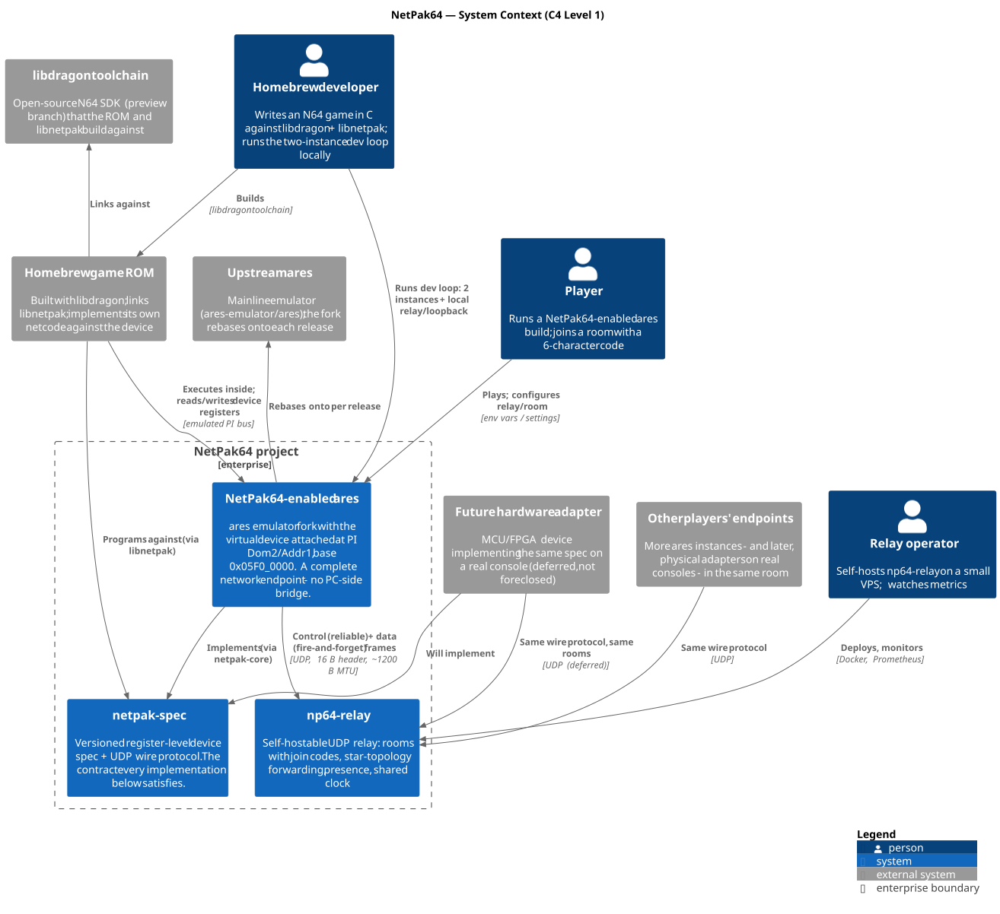

01 — System Context (C4 Level 1)
The system in one sentence
NetPak64 makes an emulated Nintendo 64 a first-class network endpoint by adding a spec-defined, memory-mapped network device to the ares emulator, a matching libdragon driver library for game ROMs, and a self-hostable UDP relay that carries traffic between instances — with the register-level spec, not any emulator API, as the durable contract, so the same ROM later runs against physical hardware.
System Context Diagram

Figure: NetPak64 system boundaries, actors, and external systems
Actors
| Actor | Needs | Touches |
|---|---|---|
| Homebrew developer | Write a networked N64 game without owning hardware, flashcarts, or a PC bridge; iterate with a fast local loop | libdragon + libnetpak (build time); two ares instances + loopback/local relay (test time) |
| Player | Run a ROM someone shared, join a friend's room with a 6-char code | A NetPak64 ares build; relay address + room config |
| Relay operator | Host rooms for a community cheaply | np64-relay binary/Docker on a small VPS; Prometheus metrics |
The developer is the primary persona for v1: every design choice that trades polish for iteration speed (env-var config, CLI-first, loopback backend) traded in their favor.
System Boundary
Inside the boundary: the spec, the ares fork with the device (including netpak-core, the reusable implementation), and np64-relay. Outside: the game ROM (user artifact, built against the library), upstream ares (we rebase; zero behavioral diff when disabled), libdragon, and the future hardware adapter (planned second implementer, not v1).
The boundary placement encodes the project's central bet: the contract is a hardware-shaped spec on the PI bus, not a software API. That is what lets one side of the wire be swapped (emulator → FPGA adapter) without touching ROMs, the library, or the relay.
Positioning against adjacent work
"The game sees a NIC, not netplay" is the sharpest way to place NetPak64:
| Project | Approach | Relationship |
|---|---|---|
| gopher64, simple64 netplay | Input-lockstep: synchronize controller streams into deterministic emulator instances | Orthogonal. Perfect for retail games (no ROM changes needed); useless for homebrew that wants real netcode, mixed topologies, or emulator↔hardware sessions. NetPak64 gives the game a device and lets it implement its own model. |
| N64-NetLib (buu342) | Homebrew networking via flashcart USB → PC bridge app → Java servers | Closest prior art; validates demand and the UDP-with-reliability design. NetPak64 removes the flashcart+PC tether and adds an emulator-native device; relay protocol borrows the proven ack'd-control-plane pattern. |
| ares ISViewer / Homebrew Mode | Emulator implements a dev-era bus-mapped debug device for homebrew | The in-tree precedent that makes an upstream RFC plausible: NetPak64 is "ISViewer, but bidirectional and networked". |
| 64DD / Randnet, SharkWire, Morita Shogi 64 | Period hardware: memory-mapped modems/network devices | Historical legitimacy plus concrete architecture: NetPak64 decodes in the 64DD's bus range and uses its interrupt line. |
Key quality attributes (drive everything downstream)
- Spec stability —
VERSION/CAPSnegotiation from day one; emulator-first but every choice hardware-plausible (trivial decode, MCU-liftable state machine). Consequence of failure: stranded ROMs. - Fork rebasability — zero behavioral diff when disabled; in-tree glue ≤ ~500 lines; logic out-of-tree. Consequence of failure: the fork dies within a few ares releases.
- Determinism under loopback — packets become architecturally visible only at emulated-time tick boundaries, so same ROM ⇒ same trace ⇒ CI-able regression tests.
- Dev-loop latency — two instances plus relay on one machine, configured by env vars, no GUI required.
- Cheap operation — worst-case saturated room ≈ 0.4 MB/s; one $5 VPS serves a community.
Trust model (v1)
Plaintext UDP with two secrets: a per-connection random 32-bit token (frame authenticity + identity across NAT rebinds) and unguessable 6-char room codes. Appropriate for "friends playing homebrew"; explicitly not resistant to an on-path attacker. Hardening path: DTLS (RFC 9147) or Noise-based layer in v2. Relay-side abuse controls (rate limits, room GC, no public lobby listing) are v1 scope.